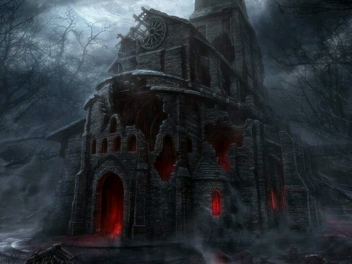

Journal Entry: September 8th, 1933. 1:10 AM -The Old Church
I tracked the cult to an old church on the far and dim outskirts of the city. The derelict building was anything but unoccupied. I found the children outside, dazed, their eyes glowing blue, clearly under some sort of mind control.
Behind the building I could see a large swath of energy, and bits of the church peeling away from the walls. I had always feared this, a way for these derranged cultists to break down the fabric of reality and summon their "Gods". I pulled my snub-nosed .38 Special from it's holster and ran into the building. Fuck, I hope I am not too late.